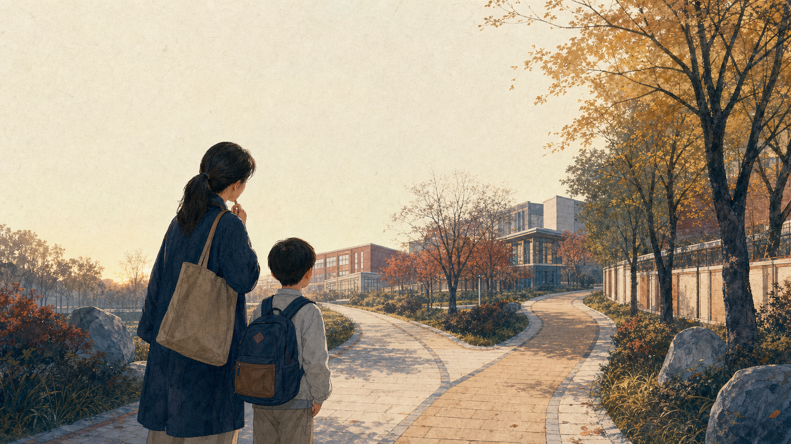

人朝小学 · 信息风险是“旧”
活动丰富、老师负责、体验舒展
2 位有小学经历的学生作者，家长 0 位。唯一细节长答主要对应约 2013—2019 年，作者本人提醒扩容后不能直接平移到当前各校区。

Zhihu evidence review · Beijing Chaoyang · 2026.07.20
答案不是一张排名表。严格筛完家长与小学就读学生评论后，一边留下两位旧生，一边是零位可核身份作者。
本报告只纳入自述为目标小学家长、在读生或毕业生，且内容明确落到小学阶段的回答与评论。房产号、教育咨询、排名帖只用于审计平台叙事，不参与口碑结论。
严格口径下，知乎不能支持“两校谁口碑更好”。人朝呈现一幅可信但过时的历史学生画像；利泽呈现的是外围标签很多、校园生活证据为空。
人朝小学 · 信息风险是“旧”
2 位有小学经历的学生作者，家长 0 位。唯一细节长答主要对应约 2013—2019 年，作者本人提醒扩容后不能直接平移到当前各校区。
陈分利泽 · 信息风险是“空”
24 条校区相关回答与 18 条公开评论逐一核验后，利泽在读家长、学生或校友均为 0。所谓“小而美”主要出自外围账号。
“人大附”“人朝”“陈经纶”的分校与集团命名非常容易混淆。任何无法落到小学部和具体校区的内容都被排除。
中国人民大学附属中学朝阳学校小学部。不包含民办人大附中朝阳分校、人朝分东坝校区，也不包含人大附中朝阳实验学校。
北京市陈经纶中学分校小学部利泽校区。2022 官方简介地址为利泽西园一区 116 楼；它是承担一至六年级的物理校区，“九年一贯”不等于七至九年级仍在 116 楼。不混入望欣园、原望京实验、帝景、嘉铭、保利或陈经纶中学本部。
只确认学校实体、地址、学段与历史规模；官方宣传、竞赛成果和贯通课程不能冒充家长或学生的生活体验。
候选数量不是口碑数量。一篇回答里的多个细节仍只算一位作者；题目里写“孩子”也不等于回答者是该校家长。
利泽路径：24 组关键词 → 394 条去重回答 → 24 条校区锚定回答 → 18 条公开评论身份复核 → 0 条合格一手样本。采集时知乎登录态有效。
点击筛选查看学习、日常与路径。这里不以“未知=中等”填满表格，也不把没有差评解释为满意。
画像的丰富程度不等于学校质量。它只反映知乎上公开、可核身份的信息可见度。
RENCHAO / HISTORICAL STUDENT VOICE
现有知乎一手口碑主要来自两名有小学经历的学生；核心长答提供了可信的历史体验，但不是当前校区普遍性调查。
具体项目与个人参与细节互相对应，比泛泛的“素质教育好”更有证据力。查看长答 ↗
同一作者既肯定老师照顾与教学，也记录个别班主任更偏重成绩的摩擦。
旧届表述是书面作业相对少，同时常有周测；两个维度不能合并成一个轻松标签。
作者提醒新增校区、学生增长后变化可能很大，这是结论边界，不是脚注。
LIZE / REPUTATION VACUUM
知乎可见讨论高度围绕房产、划片与路径，几乎没有孩子一天如何度过的叙述。
0 位可确认的利泽在读家长、学生或校友；
0 条可计入口碑的公开评论。
与黄城根比较的 4 条回答都没有就读身份与校内细节，且均为 0 赞 0 评。查看问题 ↗
房产/教育账号更常强调九年路径、望京居住和总价组合，而不是作业、师资、活动或生活服务。
对望欣园时偏正面，对黄城根时偏负面，说明所谓层级标签高度依赖语境，不能视为共识。
以下来自 2022 版朝阳区学校简介册，不是 2026 实时班额，也不参与口碑评分。
可以说：两者在 2022 快照上的量级差异明显；利泽当时为一至六年级校区，并参与小初贯通课程研究。
不能说：大校资源一定更多、小校管理一定更细，或 2022 的班数就是 2026 班额。质量判断仍要回到同届、同校区的一手体验。
当前路径：2026 朝阳区政策确认九年一贯制学校初中部对口接收本校小学毕业年级学生；具体物理校区和单个家庭资格仍按当年通知。
以下内容被保存到证据索引，便于复核；但不会进入“家长和学生怎么评价”的主结论。
“小而美”“集团前三”“认可度高”等标签没有在读身份，也没有作业、老师、午休或活动细节。
外围舆情“正在犹豫”“准备买利泽西园”只能证明关注与选择意图，不能证明孩子已经就读。
非入学后体验只说“陈分小学部”，但无法分辨利泽还是望欣园，不能强行落到本校区。
校区不明确陈分初中体验即使是第一手，也不能替代利泽小学部体验。
学段不匹配旧回答里的户籍、划片、直升断言具有时效风险，必须改由入学当年官方政策确认。
政策不稳定知乎证据的不对称，决定了两校的核验策略也应不同。
带着“活动、教师照顾、作业与周测”四个历史线索，去问孩子实际落位校区的 2025—2026 同届家长。重点识别扩容后哪些体验仍在、哪些已变。
不要先问“是不是小而美”，先问一天的时间表：几点到校、作业多久、是否午休、老师如何反馈、社团如何参加。零样本不是零风险。
把抽象的“好不好”拆成可观察的日常。
孩子实际落位哪个校区，六年内是否换校址？
2026 届一年级多少班、平均班额多少？
班主任和语数英教师的教龄、稳定性与轮岗情况？
低年级与高年级工作日平均作业时长分别多少？
周测、单元测与阶段评价多频繁，成绩如何反馈？
家长是否需要批改、打印或大量参与项目任务？
午餐由谁运营，近一年最常见反馈是什么？
是否有真实午休，空间和时长怎么安排？
课后服务到几点，社团是否全员可选、是否收费？
学生冲突与教师沟通问题通常如何处理？
人朝当前各小学地址的活动与主科师资是否一致？
利泽升入本校初中的 2026 官方规则与条件是什么？
知乎链接用于核对公开回答；官方链接只负责实体、地址、学段与历史规模。完整结构化证据随网页目录一并交付。
人朝最详细样本；小学经历主要约 2013—2019。
小学只有简短概括；初中负面没有外推。
4 条回答均非利泽家长/学生，且无校内细节。
唯一回答仍在向家长求证，不构成体验证据。
确认北京市陈经纶中学分校为公办九年一贯制学校。
只用于 2022 历史背景，不当作 2026 实时数据。
明确当时利泽承担一至六年级；属于办学基线。
用于确认校区名称仍被官方材料使用；不保留学生姓名。
确认升入本校初中部的制度路径；不指定物理校区，不替单个家庭作资格承诺。